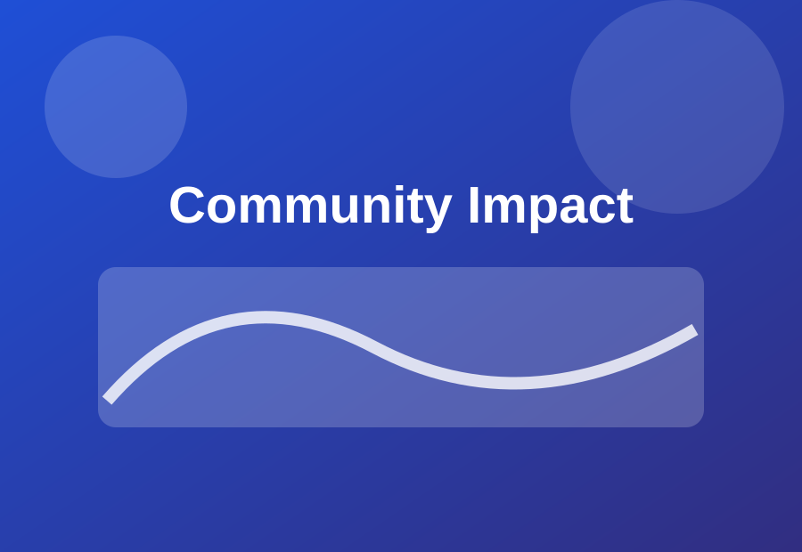
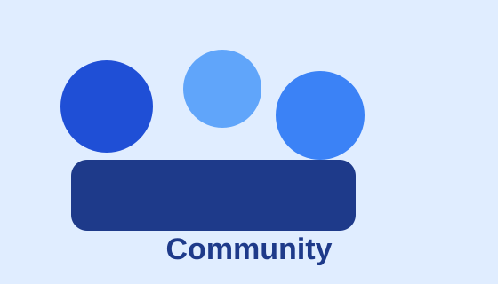
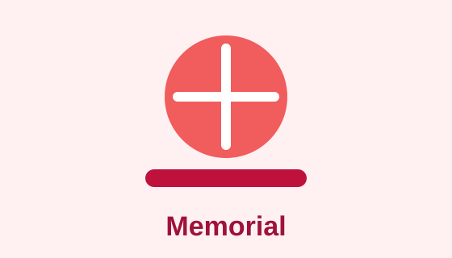

Max Soti Memorial Inc is dedicated to preserving the memory of Max Soti through meaningful charitable initiatives that support families, education, and community growth across Kendall County and beyond.
Support Our Mission

From holiday food drives in Plano to back-to-school supply distributions across Kendall County, we connect neighbors in need with the resources that matter most.
The Max Soti Scholars Fund awards annual scholarships to graduating seniors at Plano High School who demonstrate leadership, resilience, and a commitment to community service.

Each September, our memorial run/walk and community gathering bring together hundreds of participants to celebrate Max's life, raise funds, and strengthen bonds within the community.
"Max had a way of making everyone around him feel like they belonged. This foundation carries that spirit forward every single day."— Sarah Kowalski, Family Friend & Founding Volunteer
Join us at Plano Community Park for an afternoon of food, games, and live music. Free and open to all families.
Celebrating this year's scholarship recipients at Plano High School auditorium. Light refreshments served.
5K run/walk starting at Settler's Park. Registration includes a commemorative t-shirt. All proceeds benefit local scholarships.